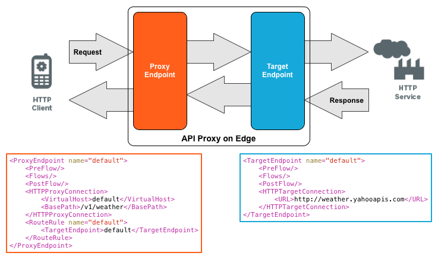

[toc]
Apigee Edge lets you easily and quickly build RESTful APIs that can be consumed by app developers. You expose APIs on Edge by building API proxies that act as managed 'facades' for backend services. This topic discusses the relationship between APIs and API proxies on Apigee Edge.
Video: Check out this short video for an introduction to API proxies.
An API is an architecture that makes it easy for one application to 'consume' capabilities or data from another application. By defining stable, simplified entry points to application logic and data, APIs enable developers to easily access and reuse application logic built by other developers. In the case of 'Web APIs', that logic and data is exposed over the network.
Since applications that consume APIs are sensitive to changes, APIs also imply a 'contract'. The contract provides some level of assurance that, over time, the API will change in a predictable manner.
Apigee Edge enables you to build APIs and if you have APIs already, expose them directly, while adding a management and visibility layer. If you have HTTP enabled services, such as SOA-based Web services, they can also be exposed as APIs via Apigee Edge.
Edge also enables you to build APIs by implementing applications hosted on the API Services platform--with no backend service involved. You can build these applications in JavaScript, Java, and on Node.js.
Apigee provides a wealth of information about APIs and best practices for developing and consuming them. To get started, see the webcast API Design or download the free eBook Web API Design: Crafting Interfaces that Developers Love.
You expose APIs on Apigee Edge by implementing API proxies. API proxies decouple the app-facing API from your backend services, shielding those apps from backend code changes. As you make backend changes to your services, apps continue to call the same API without any interruption.
In an API proxy configuration, there are two types of endpoints:
You can visualize API proxies as shown by the graphic below:

An API proxy consists of a bundle of XML configuration files and code (such as JavaScript and Java). Apigee provides several ways for you to create API proxies, including:
Edge enables you to control API behavior without writing any code by using policies. A policy is like a module that implements a specific, limited management function as part of the proxy request/response flow. Policies are designed to let you add common types of management capabilities to an API easily and reliably. Policies provide features like security, rate-limiting, transformation, and mediation capabilities, saving you from having to code and maintain this functionality on your own.
Apigee provides a set of tutorials that you can use to create your first API. Start with http://docs.apigee.com/node/9860.
A great way to learn about API proxies is to work with the samples as described in http://docs.apigee.com/node/14921.